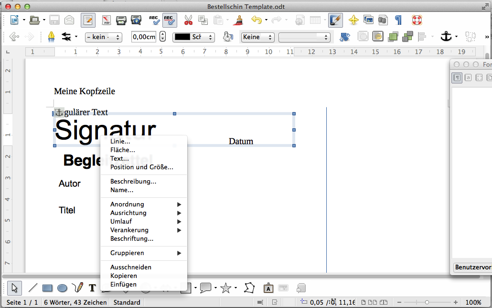
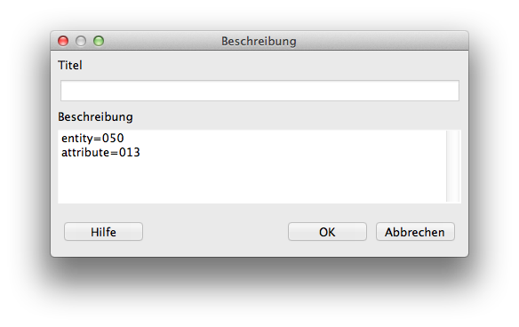

Using Open / Libre Office to create XSL-FO
Intoduction
This document describes highly experimental code, do not use it in production, use the generated FO instead and customize it.
Features
How does it work (technically)?
Open / Libre Office saves the content of a document in several XML Files which are stored in a Zip archive. The style sheet takes the file containing the content (content.xml) and transforms it from ODF to XSL-FO. The page size is taken from the style Definition (styles.xml). If an image is found, the style sheet look if the is a SVG representation an includes it into the resulting XSL-FO file. External content from slips need to be referenced in descriptions of frames, you can use all XPath functions in there. See the examples.
What dosnt work?
- Shapes
- Embedded Font
- Rastered Images
- Tables
- Notes
Usage
Create your template using Open / Libre Office Writer, you probably want to use frames to be able to place your text on the page. If you right click on a frame you can edit its description. See below.

From there you get a box where you can type your expressions and functions in.

Basic Syntax
A reference to a field is expresed as pair of an entity and an attribute: ${entity = 052,attribute = 005}. Errors will be caught during compile time, when the XSL-FO is generated. Errors in functions are more difficult to spot, they will be raised if the resulting XSL-FO is evaluated. You can mix Expressions and functions like concat(${entity=001, attribute = 010}, ${entity = 001,attribute = 006}, ${entity = 001 attribute = 008}). You can use all XPath 2.0 functions and even add your own to the XSL-FO style sheet. See a XPath 2.0 Reference to get all posibilities.
Examples for functions
Combining multiple fields to one and add text
In this example several fields are put together with a readable description.
concat('Ausleihtyp: ', ${entity = 005 attribute = 106}, ' (', ${entity = 005,attribute = 006}, ') / Nutzertyp: ', ${entity = 001,attribute = 004})
Setting the fond size depending on length
This example uses a internal function to set the font size based on several conditions.
if (string-length(${entity=050,attribute=013}) < 17) then print:set-font-size(36, ${entity=050,attribute=013}) else if (string-length(${entity=050,attribute=013}) < 23) then print:set-font-size(30, ${entity=050,attribute=013}) else if (string-length(${entity=050,attribute=013}) < 34) then print:set-font-size(24, ${entity=050,attribute=013}) else print:set-font-size(16, ${entity=050,attribute=013})
Included Functions
print:set-font-size
Sets font size for given text Arguments: * The size to be set as xs:integer * The sting to be shown as xs:string
Returns: A fo:inline element
Description: Use this function to set the font size based on conditions.
Sets the text in the given font size
print:show-if
Show text if condition is true
Arguments: * The sting to be shown as xs:string * The condition to evaluate as xs:boolean
Description: This function can be used to show or hide fields based on conditions.
Returns: A fo:inline element
print:leader
Creates a empty line
Arguments: Takes no arguments
Returns: A fo:leader element
Description: Fills a frame with empty space, use this if empty fields would let your frame colapse.